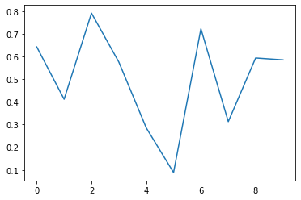
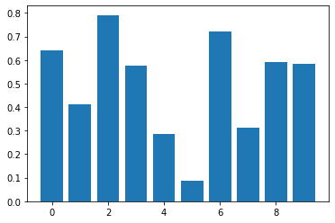
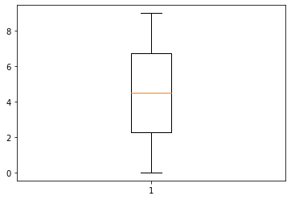

Matplotlib¶
Matplotlib is a library for plots.
import matplotlib.pylab as plt
import numpy as np
x = np.linspace(0, 9, 10)
y = np.random.rand(10)
plt.plot(x, y);

plt.scatter(x, y);

plt.bar(x, y);

plt.boxplot(x);

import matplotlib.gridspec as gridspec
def make_plot(index, x, y, plot_type='Plot'):
ax = fig.add_subplot(gs[index])
plt.annotate(f'{chr(97 + index)}', xy=(0, 1.05), xycoords='axes fraction', fontsize=14)
plt.xlabel("x")
plt.ylabel("y")
if plot_type == 'Plot':
plt.plot(x, y, color='red')
elif plot_type == 'Scatter':
plt.scatter(x, y, color='blue')
elif plot_type == 'Bar':
plt.bar(x, y, color='green')
plt.title(plot_type)
fig = plt.figure(1, figsize=(12, 4))
gs = gridspec.GridSpec(1, 3)
for index, plot_type in enumerate(['Plot', 'Scatter', 'Bar']):
make_plot(index, x, y, plot_type=plot_type)
gs.tight_layout(fig)
plt.savefig('my_plot.png')
plt.show()

For more information, see the documentation.